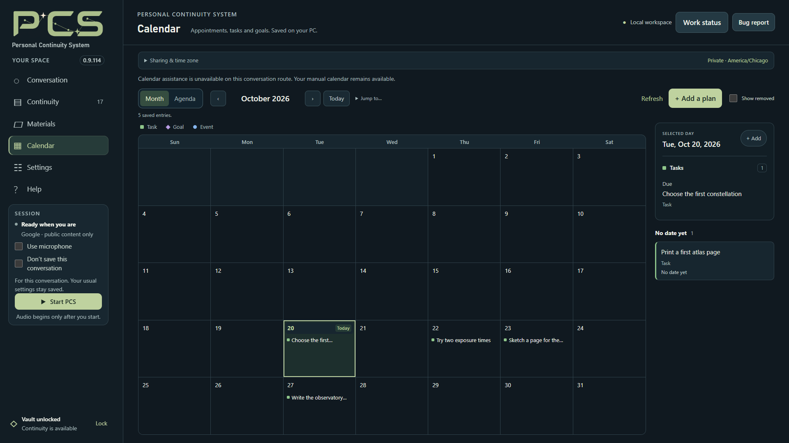

What is stored in the encrypted vault
PCS stores saved conversations, revisable memories, notebooks, prepared reading notes, retained research notes, saved Web snapshots, reading bookmarks, activity approvals and Calendar plans in an encrypted vault. Memory links, settled marks, named lessons and the optional whole-archive Map index are encrypted too. Kept thoughts, attached Notebook and Calendar quotations, their operation receipts and confirmed unfinished-edit checkpoints are also encrypted. Encrypted backups preserve the saved state, including settings and API keys you chose to remember.
Keep backups protected and the passphrase separately; a forgotten passphrase cannot be recovered. Appearance and some view choices are browser settings outside the vault backup. Unsaved edits are not guaranteed to be in a backup.
Original Materials files, imported text copies and readable exports are outside vault encryption. Copy original documents and local text imports separately when making a backup. A Markdown or TXT export is readable to anyone with access to that file and is not a complete restorable vault.
Manual reading, notebook editing, Calendar and Map browsing need no AI connection. Map connections are calculated from bounded current saved records, without a model or embedding request.
Index the whole archive builds a local, encrypted connection index for up to 50,000 memories. Saves, corrections and forgetting update it with the memory record. A link, settled mark or lesson preserves the exact revisions you reviewed; it does not silently become a reference to replacement wording. Learn how memory relationships and history work.


Load saved threads reads current saved records locally without generating an AI summary. Continue and Map actions prepare drafts for you to review; they do not send a conversation message for you. Map discovery and landmarks work with existing local evidence and your own notes.
Attach or drop a UTF-8 .txt or .md file to review its complete text. Capture accepts up to 120,000 Unicode code points and 480,000 UTF-8 bytes; chat and Keep have their own smaller limits. Save reviewed text in Materials requires PCS to be stopped and writes an ordinary local file. It does not prepare reading notes or share the text with a provider automatically. An unfinished review is temporary; keep a separate copy of anything you need.
What can be sent to a cloud provider
Google, OpenAI, Meta and experimental Alibaba Qwen are cloud connections. Google and OpenAI receive typed messages and enabled microphone audio; Qwen uses microphone audio and does not accept typed messages. Meta receives typed input or text from the local recognizer, with Windows or Kokoro providing local spoken replies. Meta has no native speech-to-speech connection in PCS. Enabled features can also send selected recalled evidence, corrections, document portions or permitted OBS images to their supported providers. Their API charges and data-use terms apply. Local encrypted storage does not make cloud processing local.
Review Settings → Memory & sharing and the selected provider roles under Connections. Memory processing, reading preparation, notebook drafts and research retain their supported provider choices. Meta memory and research can use separate Meta keys or fall back to the Meta conversation key; switching providers does not silently reuse another provider’s key. Proactive help has its own Review model and inputs step showing its destination and permitted inputs.
Spoiler-limited story activities have an additional saved-memory boundary: review and approve complete current accounts for that exact scope. Automatic activity recognition cannot approve accounts for you. A separate selected-account reflection also requires review before sharing. These controls cannot remove a model’s own knowledge or context already delivered. See activity memory and reflection.
Public research and saved-memory access have separate permissions. Enabled public research remains available during activities without extra activity approval or a conversation restart. PCS does not automatically attach private activity fields, memories or conversation history to public queries. A model-generated query can still reflect details you gave it, so keep private details out of research requests. Existing web settings, cancellation, Stop and Lock still apply.
Original-passage sharing is a separate choice. Review the offered permissions when changing the model or destination; saving a connection profile does not grant a new permission. Jev can restore an exact previously reviewed setup when its saved key and settings still match. A new key or sharing combination needs review again.
Optional memory hints start off as an individual setting; new Quick Setup’s Recommended continuity includes them in its combined review. When enabled, a compact overview can disclose saved-area names, counts, dates and lesson names with takeaways to supported cloud connections at startup. Matching cues may also contain limited saved wording. These packets follow existing sharing choices and use provider input context. Lesson stories and supporting memories are read separately under their own current checks.
Prepared reading notes and Retained research notes are separate saved sources. Restored prepared notes can be inspected locally without their originals, but conversation access still requires each included note’s unchanged original and current sharing permission. One unavailable source does not prevent access to unrelated available notes; an unavailable lookup is not proof that all saved notes are missing.
Prepare book asks you to approve a bounded sequence of source portions with its selected provider and scope. It saves a checkpoint after each completed portion. Resume preparation reviews the remaining scope before more model work. The saved coverage identifies unextractable ranges; those ranges are not treated as content the model read.
Attached Keep quotations are for local inspection and export. Current Notebook and Calendar model tools read their ordinary fields, not the attached quotation bodies. Your separate framing becomes ordinary notes and follows that destination’s sharing choices. Continuing a kept thought into Conversation prepares a draft; sending it uses the conversation’s normal disclosure route.
What stays local with a Local model
Local conversation and memory use the selected model on your PC, without cloud AI fallback. Optional CPU Search by meaning also works locally; its temporary index stays in RAM and clears at Lock.
Long Local conversations compact their working prompt while retaining recent complete exchanges. Older exact wording remains searchable during that session, including messages awaiting memory processing. The temporary archive clears when the session closes; saved originals remain unchanged. Prompt reuse stays inside the running Local runtime and ends with Stop, Lock or Quit.
Online features still have their own destinations. Review them separately:
- Local online lookup sends queries to Brave and fetches public pages. Generated queries can include details from your request; the Local model interprets the returned excerpts.
- Local + Jev is an optional TypeSafe cloud request. It requires separate review and permission even if Brave is off. By default, Jev receives the current complete user statement, carrying mode and proposed topic/angle/origin records. An optional switch adds bounded recent conversation messages. Proposals may reflect private context already shared with the conversation model; an origin label does not make them public.
- Jev Library exploration has its own review and per-request sharing permission. The exact saved excerpts, required corrections, question and temporary follow/dismiss feedback shown in the review can go to TypeSafe. The conversation Jev switch may remain off; its approval does not cover this additional saved-record scope. See the Library trial.
- Materials preparation and notebook outlines retain their own visible provider choice and sharing review. Choosing Local for Conversation does not make a separately approved cloud job local.
Keep Brave and conversation Jev off for an offline conversation, and avoid Library exploration or cloud helper requests. Check the destination before starting any separate job. Jev does not independently retrieve your vault, images or audio; it assesses its supplied inputs, which can disclose saved content and add latency or charges. Installing a key alone does not enable requests.
Paste page text retains text you provide without a website or AI request. Explicit public-page imports contact the website. Later sharing a saved source with cloud conversation sends permitted portions under Materials controls. A pasted source is labeled as pasted; its address does not verify origin or completeness.
Read along speaks retained extracted text through a local browser/OS voice without contacting a website or AI. Discuss what we read prepares a draft; sending it uses the ordinary conversation permissions. The Build my starting map preview and download are also local. Normal saving and sharing settings apply if you later send the introduction, and learning may save before its recap.
Saving and session controls
- Don’t save this conversation controls new PCS saving. It does not prevent an active cloud provider from receiving the conversation.
- Clear chat and hiding the memory stream change the display. They do not delete saved records or disable learning.
- Stop PCS ends conversation and capture; Lock closes vault access; Quit PCS shuts down the host.
Closing the browser tab alone can leave the host running and the vault unlocked. Deleting records cannot retract earlier provider disclosure or erase older backups. See memory controls for inspection and correction.
Forgetting reviews the current affected records, including dependent work, retained quotations and recovery drafts when present. A shelf bookmark and an attached quotation are separate copies: removing the bookmark leaves the quotation. Removing a quotation preserves your independently written destination notes. Where a model or mixed copy’s complete source exposure is unknown, deletion remains conservative. Earlier readable exports and backups are separate files.
Backups, passphrases and restore
Save your edits and finish or cancel background work. While stopped and unlocked, open Settings → Privacy & maintenance → Backup & restore. Save current backup… creates a complete encrypted vault copy using its current passphrase. Create protected backup… gives that copy a separate passphrase without changing the working vault or earlier backups. Choose a location in the Save As dialog and wait for confirmation.
Automatic encrypted backups are optional. Choose an existing folder on a local or removable drive and enable daily backups. PCS makes the first copy when ready, then one every 24 hours while PCS is open, its page is connected, and the vault is unlocked and stopped with background work finished. They do not run while closed or locked, and a conversation without saving pauses them. Network folders and mapped network drives are unsupported.
PCS keeps the newest automatic copy from each of the 14 most recent days and one per week for 8 weeks. Each installation tags its own copies and only removes its older automatic backups for that vault. Copies from other installations and earlier untagged versions stay, as do manual backups and files you added. Turning backups off leaves existing files. Check the last successful date and any error; a disconnected drive or insufficient space can prevent a copy. Moving or restoring a vault requires choosing its backup folder again.
Automatic copies use the current vault passphrase. Manual Save As backups, automatic backups and in-app restore support vault files up to 2 GiB. Copy original Materials and imported text separately and keep a copy apart from the working vault. Extract the complete update into a fresh folder, open Start PCS.exe, and choose Restore an encrypted backup instead before creating a vault. Check backup verifies the copy before you choose Restore this backup. Restore does not merge with or overwrite an existing vault, and it can bring back information forgotten after that backup was made.
To change the working vault’s passphrase, remain stopped and unlocked and use Change vault passphrase in Backup & restore. Enter the current passphrase and the new one twice. New passphrases need at least 15 characters; choose a long, unique one. The change does not update earlier backups, which still need their own original passphrases. PCS cannot reset a forgotten secret or make a previously copied file use a new one.
After restore, copy unchanged originals into data/Materials, preserving filenames, contents and subfolders. While unlocked and stopped, choose Materials → Documents → Refresh list. Choose the automatic-backup destination again, and keep the previous installation and pre-upgrade backup until you have checked the restored copy.
Recover unfinished edits or inspect a damaged vault
Windows locking and inactivity locking start off. When automatic locking is enabled, PCS can checkpoint unfinished ordinary edits into an encrypted recovery journal and request a final snapshot before Lock. This includes supported message, Notebook, memory, Calendar, Practice, Keep, Web and Map edits. Passwords, connection keys, pending model approvals and Library/Map drafts for Conversation are excluded.
After unlocking, Recover unfinished edits offers text to inspect and copy; it never sends a message or reapplies a save automatically. A recovered Practice correction retains the attempt and revision context and can flag an unconfirmed earlier save. Inspect the saved assessment before copying wording back into its correction form.
Recovery is bounded. A frozen or disconnected page may leave only its last acknowledged checkpoint; an oversized or failed snapshot is not silently shortened. Lock still proceeds. Don’t save this conversation suppresses checkpoints, including the final temporary draft. Deleting primary saved information also clears recovery drafts that could contain copied evidence. If the page connection briefly fails, a bounded copy in the same open tab may be offered separately after reconnecting; it does not survive closing or reloading that tab.
Damaged records are not silently discarded. If individual records fail integrity checks at unlock, PCS can quarantine them and open the remaining information read-only. Saving, backups and passphrase changes are paused; damaged records are hidden, not rewritten or deleted. Damage to core settings or keys can prevent unlocking altogether. Preserve the vault file and restore an intact backup into a fresh PCS folder.
Which PCS versions can open your backup
The vault records the minimum PCS version needed by features actually saved in it. Opening the app, browsing or previewing alone does not raise that requirement. Removing those records later does not lower it, and an older reader refuses unsupported data instead of dropping it.
A plain Keep shelf item requires PCS 0.9.74 or newer. The first successful save of a verified selected-record Keep, an attached Notebook or Calendar quotation, or an encrypted Practice correction checkpoint requires PCS 0.9.78 or newer to reopen the vault. Other saved features can already impose their own requirements.
Saved Meta conversation settings, keys, profiles or provenance can require PCS 0.9.80 or newer. A combined message recovery section above the earlier 65,536-byte limit also requires 0.9.80. New Meta helper settings, role credentials and visual provenance can require PCS 0.9.81 or newer; unused default helper model choices alone do not raise the floor. Saving pin/next-step metadata or editing an existing kept note with the new controls requires PCS 0.9.88 or newer to reopen that vault. Opening or browsing alone does not add this requirement.
Newer features add these requirements when their data is saved:
- 0.9.105: saved Map layouts or lists that exceed the older presentation limits.
- 0.9.106: the first memory link, settled mark, named lesson or queued model suggestion.
- 0.9.107: building the whole-archive connection index, or saving Settings with the new Local context/cache choices. Current Settings saves include the cache choice even when using its default.
- 0.9.110: saving a proactive-help approval for an exact model and inputs.
- 0.9.113: a preparation checkpoint with explicit unextractable source ranges. Ordinary notes without that metadata retain their earlier requirements.
0.9.114 adds no further reader requirement. A Recommended Local setup saved before 0.9.107 can start at the new default context without rewriting its old settings; a later Settings save does raise the requirement. Before relying on a downgrade, use the backup’s actual reported minimum.
Keep a pre-upgrade encrypted backup and the original cleanly stopped installation if you may need an older PCS. Check backup reports the saved reader requirement. The release includes the complete table in docs/VAULT_COMPATIBILITY.md; see the 0.9.114 release and source package and upgrade guide.
Before sharing a screen or support file
OBS shares the scene you permit. Preview it before enabling Vision. Visible Library or Map records can appear in a shared scene; opening a local page does not protect it from screen capture.
Local 0.9.114 checks whether an available frame is relevant before including it with a reply. This is separate from capture permission and does not make a sensitive OBS scene safe to share. Google briefly pauses background image submission during an owned memory lookup; fresh capture resumes afterward, without replaying the discarded frames.
PCS listens on this computer’s loopback address. Its launcher uses a short-lived, one-use launch code rather than putting the access key in the address bar. Use Start PCS.exe to open the authenticated page. Keep launch links, running.json, keys and passphrases private.
Bug reports are not automatically posted to support. Review the file yourself before using Discord or GitHub Issues. Remove keys, passphrases, tokens, personal records and sensitive paths.